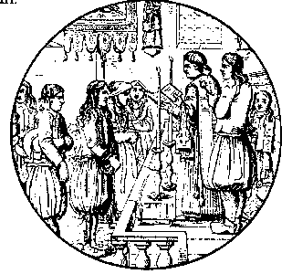

Ar C'hloareg Paour
Barzhaz Breizh

Ton
|
1. Va boutoù koad 'm euz kollet, roget va zreidigoù
O vond da heul va dousig d'ar parkoù, d'ar c'hoajoù, Pa ve ar glav, ar grizil, an erc'h war an douar Kement-se ne ket eun harz da zaou zen a n'em gar. 2. Va dousig a zo ur plac'h yaouank-flamm eveldon N'he deus ket c'hoazh seitek vloaz, ur plac'h koant ha rubenn He selloù zo leun a dan, hag he c'homzoù mignon 'M eus kemeret ur prizon da lakaat va c'halon 3. Ne c'houfen me da betra he hevelebekaat , Mard eo d'ar rozennig-gwenn zo "roz-Mari" anvet ? Perlezennig ar merc'hed, bleun lili ar bleunioù, Hirio 'mañ o tigoriñ ha warc'hoazh e serro 4. - Me a zo bet, ma dousig, oc'h ho tarempreded Evel ma ve an eostig war ar spren-gwenn kludet : Pa fell dezhañ paouezañ, 'teu an drein d'e bikañ Neuze 'sav war beg ar brank hag e teu da ganañ |
5. Me zo evel an eostig, pe 'vel an anaon
E-kreiz tan ar Purgator o c'hortoz e levon Echuet eo an termen hag an devezh deuet Ma'z in-me 'tre 'barzh ho ti, gant ar Vazvalened 6. Ma steredenn zo kalet, ma stad zo dinatur N'em eus bet war ar bed-mañ nemet displijadur ; N'em eus na kar na mignon, siwazh, na mamm na tad Na kristen war an douar hag a garfe ma mad 7. N'ez eus den 'barzh ar bed-mañ, abaoe 'd on deuet, A zo bet diwar ho penn kel liez tamallet Rak-se war benn va daoulin, hag en anv Doue, Ho pedan-me da gaout ouzh ho kloareg truez ! 8. Ar sonig-mañ oa savet en ur dont gant an traez Eus a bardon Sant-Mikel, lec'h ma oa ma mestrez Pa welan o tont ar mor, ne rafen van ebet Da vezañ beuzet ennañ, ma n'am selaouer ket |
Extraits des carnets de collecte de La Villemarqué

|
P.149
ME 'M EUS USET VA BOUTOU (1) Me 'm eus uset va boutoù, implijet va zachoù , O vont da wel Loisaik d'ar parkoù, d'ar prajoù. Pa vez ar glav, ar grizil, an erc'h war an douar N'ez eus ket evit miroud deus daou zen en em gar... Evit rest ar son glevit Lojaik 2 P.150 ME M'EUS CHOAZET UR VESTREZ a. Me m'eus choazet ur vestrez n'eo ket pell diouzhin, Ur plac'hig a imor vat a zo joaiuz ha ge, |
(2.3) Gant he zelloù ken ardant , he c'homzoù ken mignon,
Me 'meus choazet ur prizon da lakaat va c'halon. (3.1) N'ouzon deus-a bep tra doned he... veuliñ, Nemed deus ar rozenn wenn hañvet "rosmari", P.151 (3.3) Bleuñvig eus ar merc'hed, rouanez ar bleunioù Hirio ema digor ha warc'hoazh e serro. (4) Me zo, me zo bet va dous, demeus ho tarampred Keit ma vez an eostik e bod spern o kousked. Ha pa fell dezhañ paoueziñ, 'teu an drein d'he pikañ, Ha ma sav deus beg ar bod, ha ma komañs kanañ. (5) Me zo bet, va dous, e toull ho tor vel an anaon O deved e tan ar purkator o c'hortoz e levon Echuet eo an termenn ha degouet an devezh Ma kouskfemp en ur stroll, allas, gant levenez. |
P. 152
(6) Va flanedenn zo kalet ha va chañs dinatur Abaoe on deuet war an douar, nemed displijadur. N'am-eus na kar na mignon, siwazh, na mamm na tad, Na kristen war an douar hag e garfe va mat. (7) N'ez eus den war an douar, abaoe mez'on deuet Zo bet drouk-prezeget gant 'n dud kement on bet. Me zo drouk-prezeget gant darn eus va ligne Rak-se ho pedon bremañ da gavout ouzhon truez. b. Hogen me yelo 'n ur c'hoad evit ... Hag eno gant al lapoused me vevo disoursi. |